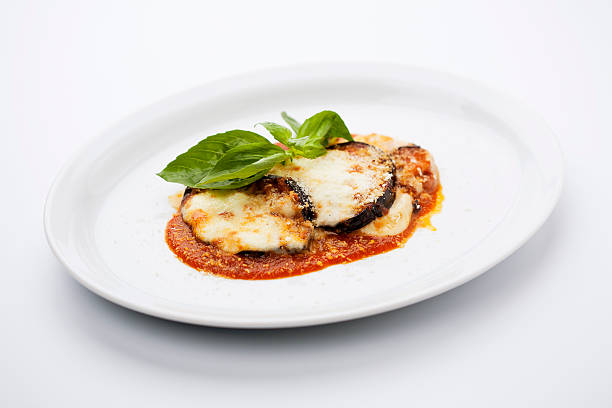

Eggplant Parm

Description
A vegetarian rendition of the classic Italian parmesan dish, Aubergine-style. This baked eggplant parm will not disappoint.
Crispy eggplant slices, breaded, baked and layered with marinara, Italian herbs and fresh mozzarella. Can be served over pasta, in a sub roll, pizza or calzone.
Servings: about 3-4
Ingredients
- 1/2 cups breadcrumbs
- 1/4 cup grated parmesan
- 1 tsp Italian seasoning
- 1 tsp salt
- 1/2 tsp garlic powder
- 1/2 tsp onion powder
- 1/4 cup flour
- 2 large eggs, beaten
- 1 medium eggplant, sliced 1/2 inch rounds
- 1 cup marinara, as desired
- 8 slices mozzarella, as desired
- fresh basil leaves
Steps
- Preheat oven to 375 degrees Fahrenheit.
- Combine breadcrumbs, parmesan, seasoning, salt, onion and garlic powder in a bowl. Put flour in a second bowl. Put beaten eggs in a third bowl.
- Dip eggplant slice on both sides into flour, then egg, and finally seasoned breadcrumbs. Place on baking tray evenly spaced and repeat for remaining slices.
- Place baking tray in oven for 8-10 minutes. Flip slices when top side is golden brown and bake for 4-5 additional minutes or until desired crispness.
- Remove from oven, top each with spoonful marinara and mozzarella. Return to warm oven to melt cheese.
- Garnish each round with sprig of fresh basil when ready to serve.